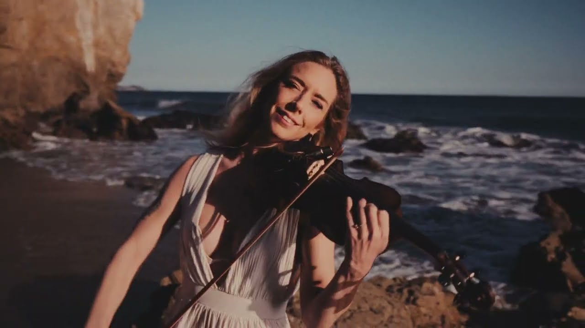
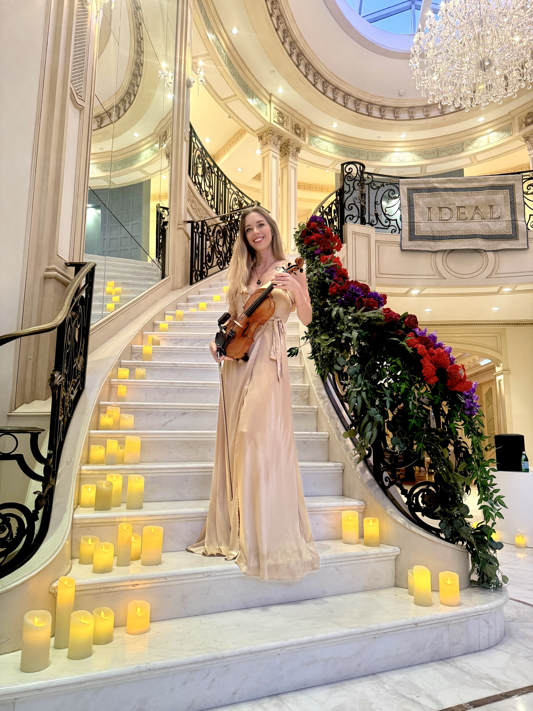
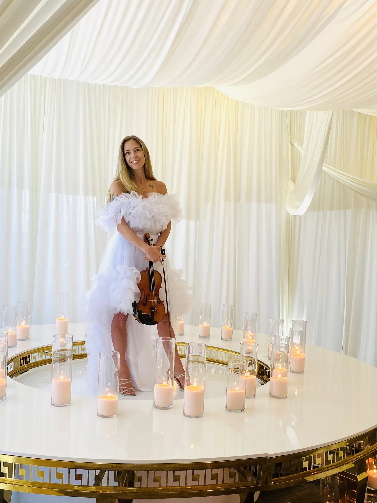
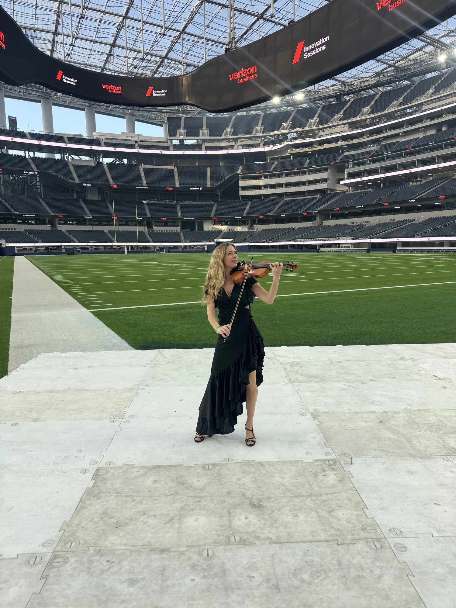
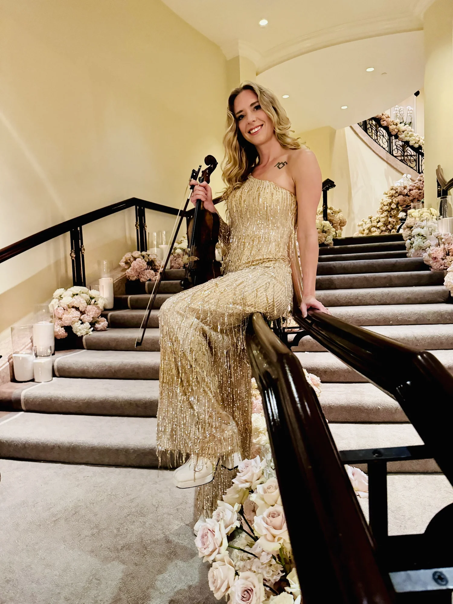
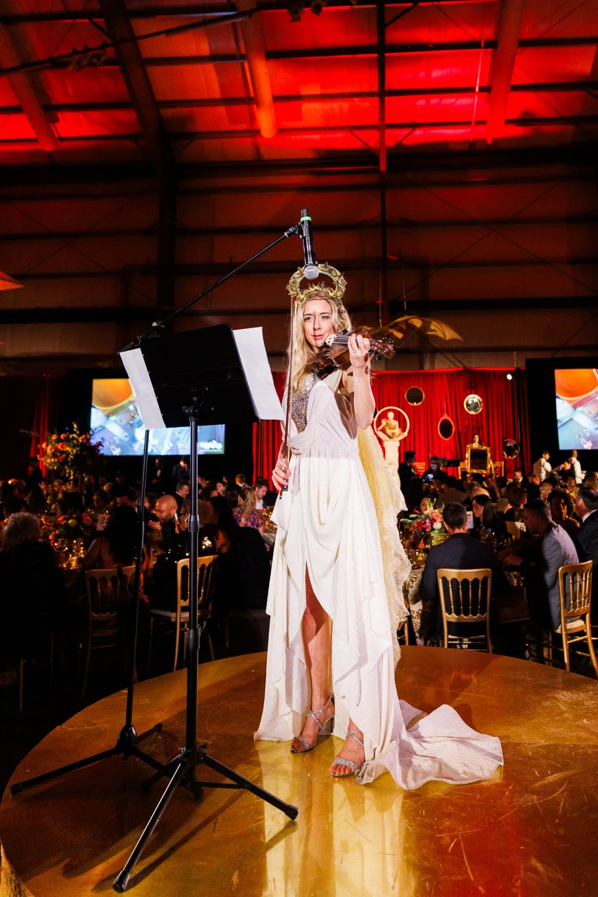
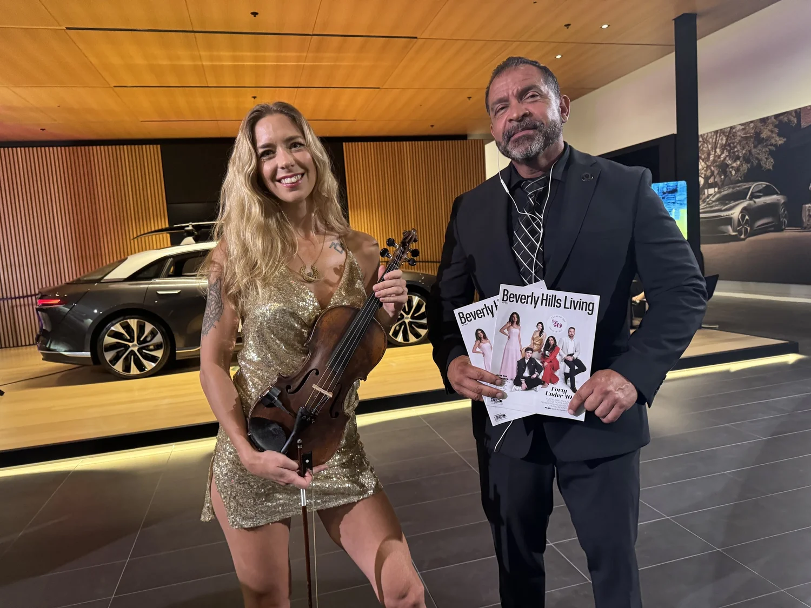
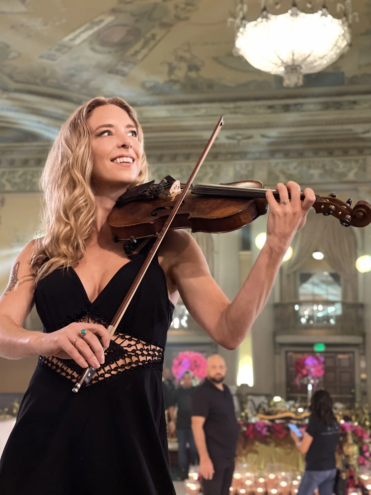
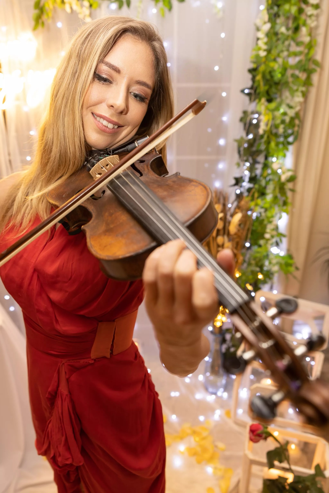
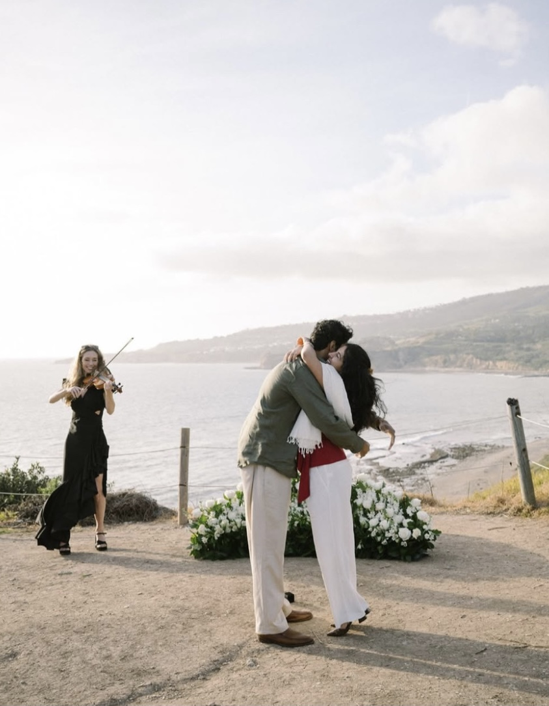

Los Angeles · Southern California · Destination Weddings
Luxury violin experiences for weddings & private events.
Cinematic live violin that shapes the atmosphere of your event—immersive, elegant and unforgettable.
Watch Elin perform
A cinematic take on Lana Del Rey.
See the atmosphere, emotion and modern style Elin brings to a live performance.
Watch on YouTube →
Play the Lana Del Rey performance
The Experience
From the first conversation to the final note, everything is shaped around your event.
A personal, polished, and cinematic live music experience—planned with intention and performed with an instinct for the moment.
Create your custom performance →We shape the vision
We begin with your event, your favorite music, and how you want the room to feel. Together, we curate songs, performance moments, attire, and every important detail.
Every detail is coordinated
Elin works with your planner and venue on timing, setup, sound, and transitions—creating a graceful experience that never asks you to manage the music.
The day of your event
The music moves naturally with each part of the celebration—setting an elegant tone, building energy, and creating moments that feel personal to you and memorable to your guests.
Performance films
Hear the range. Feel the atmosphere.
From modern pop and dance-floor favorites to timeless classical repertoire.
Signature services
Music for every part of the celebration.
01
Weddings
Ceremony, cocktail hour, dinner entertainment and unforgettable grand entrances.
- Custom ceremony songs
- Wireless amplification
- Planner coordination
Corporate Events
Polished live entertainment for conferences, brand activations, galas and executive receptions.
- Modern, elegant repertoire
- Branded musical moments
- Professional production
Private Events
Luxury music for birthdays, anniversaries, dinner parties and celebrations at private estates.
- Curated setlists
- Indoor or outdoor setup
- Flexible performance formats
Proposals
A discreet, emotional performance timed perfectly for one of life’s most meaningful questions.
- Location coordination
- Your special song
- Surprise-friendly planning
The Golden Hour Experience
Effortless elegance from the first note.
A premium performance package designed for couples and hosts who want live music to feel seamlessly integrated into the event—not added on at the last minute.
Explore Wedding Experiences✓Personal music consultation
✓Unlimited custom song requests
✓Professional sound system
✓Coordination with your planner or venue
✓Elegant styling tailored to the event

Meet Elin
Classically trained. Modern in style. Warm and personal in every performance.
Elin Wolf is a Los Angeles-based violinist with a bachelor’s degree in music and more than 15 years of professional performance experience. Her style blends technical excellence with a modern, expressive approach that feels equally at home at an intimate proposal, a luxury wedding or a large corporate event.
Her performance credits include SoFi Stadium, the California Science Center for the Leonardo da Vinci exhibition, Four Seasons Beverly Hills and elite destinations across Southern California.
Every booking receives thoughtful preparation, reliable communication and music chosen to reflect the personality of the event.
Work With ElinSelected performances
Inside the experience.







Your music, your story
From Canon in D to Lana Del Rey.
PopTop 40R&BLatinEDMClassicalFilm MusicRomantic Standards
Popular selections include “A Thousand Years,” “River Flows in You,” “Can’t Help Falling in Love,” Sinatra favorites and custom arrangements of songs that are meaningful to you.
Client love
Music they still talk about after the event.
★★★★★ 5.0 average from 15 verified client reviews
“Every single guest came up to tell me how much they were enjoying her performance. She made the party unforgettable.”— Farnoush Hamidi
“Elin was incredible. Made my proposal an amazing experience! She is very talented—literally perfect.”— Christian Contreras
“Elin was an amazing addition to our event. Professional, with such a warm energy.”— Anaya V. · Verified client review
Areas served
Performing throughout Southern California and beyond.
Los AngelesBeverly HillsMalibuSanta MonicaManhattan BeachPalos VerdesOrange CountySanta Barbara
Frequently asked questions
Everything you need to know.
Do you take custom song requests?
Yes. Custom song planning is available, and unlimited requests are included in the Golden Hour Experience.
Do you provide your own sound system?
Yes. Professional amplification is available for most events. Venue systems may also be used when coordinated in advance.
Can you perform outdoors?
Yes, provided there is appropriate shade or weather protection for the instrument and performer.
Do you travel outside Los Angeles?
Yes. Travel is complimentary within 20 miles, with additional mileage or travel fees for events farther away.
How do I reserve my date?
Your date is secured once the agreement is signed and the required retainer has been received.
Begin your experience
Tell me about your event.
Share your date, location and vision. You’ll receive a personalized response with availability and the best performance options for your celebration.
What happens next
01A personal responseElin confirms availability and recommends the experience that best fits your event.
02Your details are refinedTogether, you shape the timing, music, and important performance moments.
03Your date is reservedYour booking is secured with a signed agreement and the required retainer.